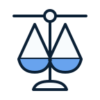

Build-Bench Challenge
Repair real cross-architecture package build failures with autonomous Agents.
Keeping large-scale software ecosystems portable and buildable across heterogeneous architectures has become an increasingly important challenge for sustainable software evolution. A package that builds on one architecture can still fail on another. Build-Bench turns these real portability failures into an executable benchmark for repair Agents.
Teams submit a runnable repair Agent. Organizers run qualified versions, derive a canonical patch, and accept a repair only when the clean target-architecture build succeeds.

Competition partners
Supporters
-
 Nankai UniversityOrganizer
Nankai UniversityOrganizer
-
 MicrosoftOrganizer
MicrosoftOrganizer
-
 MeituanSupporter
MeituanSupporter
-
 Computer Network Information Center, Chinese Academy of SciencesSupporter
Computer Network Information Center, Chinese Academy of SciencesSupporter
What is the challenge?
Keeping large-scale software ecosystems portable and buildable across heterogeneous architectures has become an increasingly important challenge for sustainable software evolution. A package that builds on one architecture can still fail on another. Build-Bench turns these real portability failures into an executable benchmark for repair Agents. Teams submit a runnable repair Agent. Organizers run qualified versions, derive a canonical patch, and accept a repair only when the clean target-architecture build succeeds. Build-Bench challenges teams to develop an Agent that repairs real software packages that build successfully on one instruction-set architecture but fail on another, including x86_64, aarch64 (Arm64), and riscv64 environments. For each Case, the Agent receives a package workspace and failed-build context, then modifies the permitted files to restore a successful target build.
- 01
Receive a real failed Case
The Agent gets the package workspace, target architecture, build logs, and failure context.
- 02
Diagnose and repair
The Agent investigates the failure and modifies only the files permitted by the Case.
- 03
Produce a canonical patch
Organizers extract and normalize the Agent's final workspace changes into a reproducible patch.
- 04
Pass a clean target rebuild
The repair counts only when that patch rebuilds the untouched package in the official target environment.
Build-Bench extends our prior research published in ACM TOSEM [1] with newly curated multi-architecture Cases and organizer-run executable evaluation. Prior results show substantial room for improvement, motivating the development of more capable autonomous repair Agents.

How to participate
Move through the competition from team registration to the final version freeze. Each step below opens the page you need next.
- 01Create your teamRegister team
Register a team account
Create the team identity used for submissions, evaluation, and leaderboard results.
- 02Enter the workspaceSign in
Sign in
Access the participant workspace and the submission tools for your registered team.
- 03DevelopGet the Starter Kit
Get the Starter Kit
Build and test your Agent with the Starter Kit, public Cases, and local validation workflow.
- 04QualifyMy submissions
Upload and monitor your Agent
Upload an Agent version, pass the Hosted Smoke Test, and review its qualification status.
- 05CompeteView timeline
Freeze the final qualified version
Follow the milestones and freeze one qualified version for organizer-run evaluation and ranking.

How are repairs evaluated?A repair succeeds only if the Agent's final changes can be applied to a clean Case and the package builds successfully in the official target-architecture environment.
Solutions are judged by verified build results, not by similarity to a reference patch.
- 01
Canonical patch
Extract the Agent's final permitted changes.
- 02
Clean apply
Apply the patch to an untouched copy of the Case.
- 03
Official target build
Rebuild in the organizer-controlled target-architecture environment.
- 04
Verified result
Count success only when the clean target build passes.
The share of competition Cases that pass the full clean-build verification pipeline.
- Execution Time
- Wall-clock repair runtime
- Token Usage
- Agent model-token consumption
Reference-patch similarity is not used.
Repairs are ranked primarily by Verified Build Success Rate, with Execution Time and Token Usage reported as secondary efficiency metrics.
Recognition and opportunities
The confirmed award structure recognizes top-performing teams and an outstanding open-source or repair contribution.
- $1,000
1st Prize
1 team
- $500 each
2nd Prize
2 teams
- $300 each
3rd Prize
3 teams
- $300
Best Open Source / Best Repair Award
1 team
- ICSE 2027
Certificate and official ICSE recognition
Awarded teams receive an official certificate
Important dates
- — Public development and validation open
- — Final Agent versions freeze
- — Final results published
- — Competition session and presentations
References
- Chenyu Zhao, Shenglin Zhang*, Zeshun Huang, Weilin Jin, Yongqian Sun, Dan Pei, Chaoyun Zhang, Qingwei Lin, Chetan Bansal, Saravan Rajmohan, Minghua Ma. Can Language Models Go Beyond Coding? Assessing the Capability of Language Models to Build Real-World Systems. ACM Transactions on Software Engineering and Methodology (TOSEM), 2026. (CCF A) [paper]
- Chenyu Zhao, Minghua Ma*, Shenglin Zhang, Zeshun Huang, Yongqian Sun, Chetan Bansal, Saravan Rajmohan, Dan Pei. EvidenT: An Evidence-Preserving Framework for Iterative System-Level Package Repair. ACM SIGSOFT International Symposium on Software Testing and Analysis (ISSTA), 2026. (CCF A) [paper]